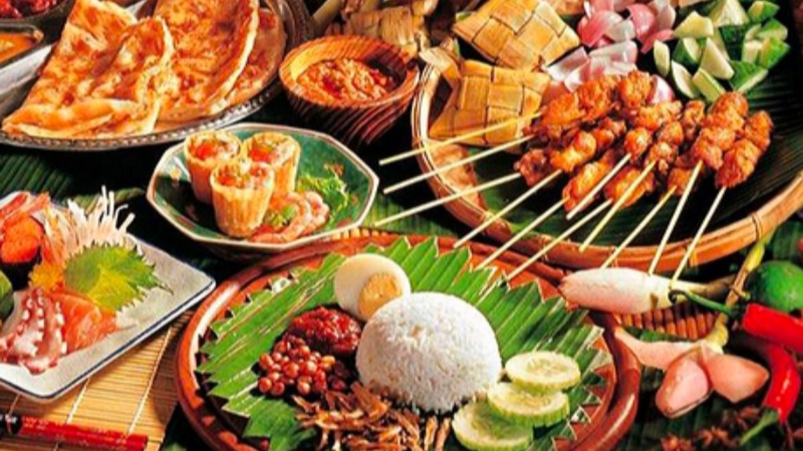

Jelajahi Rasa Tradisi!
Malaysia kaya dengan warisan kulinari. Klik di bawah untuk memulakan pengembaraan rasa anda!
- Nasi Kerabu (Kelantan)
- Nasi Dagang (Terengganu)
- Gulai Tempoyak Ikan Patin (Pahang)
- Rendang Tok (Perak)
- Laksa Penang (Pulau Pinang)
- Gulai Batang Pisang (Kedah)
- Ringgi (Perlis)
- Nasi Ambeng (Selangor)
- Masak Lemak Cili Api (Negeri Sembilan)
- Asam Pedas (Melaka)
- Mi Bandung (Johor)
- Hinava Ginapan (Sabah)
- Manok Pansoh (Sarawak)